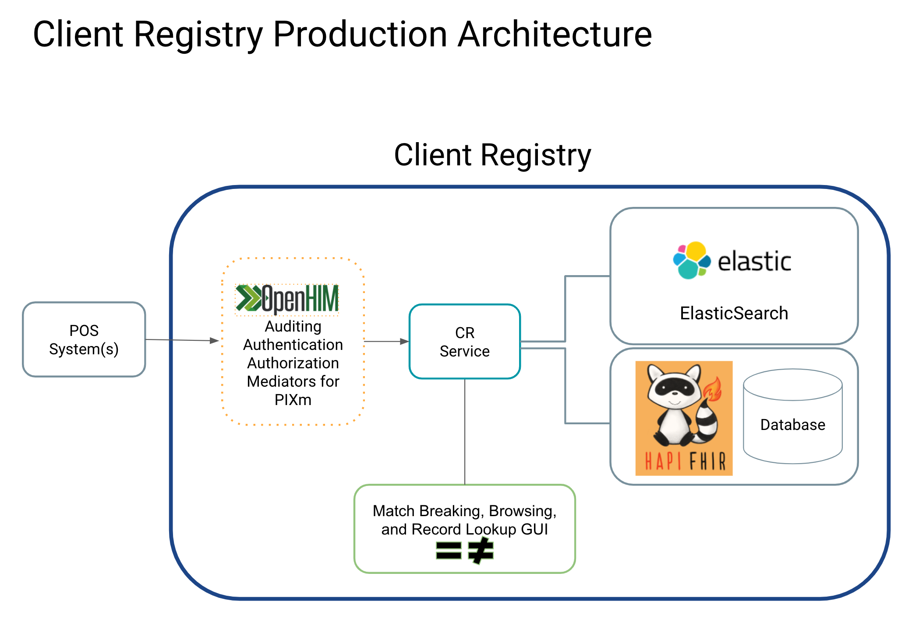

Architecture
NHCR is not one application, instead it's a set of applications that work together in the Open Health Information Exchange (OpenHIE) architecture to serve point-of-service systems, like EMRs, insurance mechanisms, and labs.
Note
This is not an OpenHIE product. The OpenHIE community of practice does not produce software products. Rather OpenHIE produces an architecture specification and is composed of a large, global community of practice around standards-based health information exchanges, particularly in low resource settings. Please join us!
The NHCR architecture includes:
- The NHCR Service: The API for managing queries, routing traffic to the components, and overall entrypoint. It is written in Node JS.
- The HAPI FHIR Server: HAPI is the reference FHIR server in Java and scalable into production environments.
- The ElasticSearch: Elasticsearch is a powerful search engine that is highly performant.
- An optional UI to view and break matches between records, and view matching histories (audit events).
- The Open Health Information Mediator (OpenHIM) (Optional): The OpenHIM is the entrypoint for POS systems, and includes authentication (are you who you say you are?), authorization (what roles do you have permission to fulfill?), and auditing of all transactions. OpenHIM is optional but the administrator must manage users and node access in some manner if not with OpenHIM.
